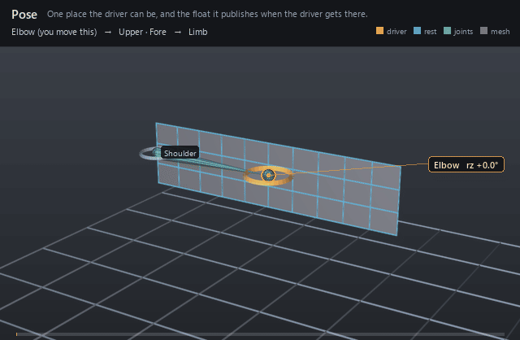

| On this page | |
| Node type | RigExecPose |
| Example | pose_interpolator.usda |
| Category | Pose space |
Overview ¶

A pose is a single authored sample of its interpolator's pose space:
where the driver stands, how wide that pose's influence reaches, and the
outputs:weight a blend channel connects to. Its weight is 1 when the
driver stands exactly on the pose and, after the interpolator's
normalization, a share of the total elsewhere — negative where the solve
says lean away from this pose. Poses are prims parented under their
interpolator rather than parallel arrays on it, so a layer can retune one
pose's radius, or switch it off, without restating the other seven.
One authored pose of a RigExecPoseInterpolator, and the float it publishes.
A pose is a place the driver can be, plus how wide its influence reaches. Its outputs:weight is what a RigExecBlendInput's inputs:weight connects to; the weight is 1 when the driver stands exactly on this pose and (after normalization) shares the rig with its neighbours elsewhere.
Poses are children of their interpolator rather than a parallel array on it so that each one composes independently -- a layer can retune one pose's radius, or disable it, without restating the other seven. That is the same reason RigExecBlendSample is a prim and not an array entry.
How it works ¶
Six of the pose's attributes are read at compile time, when the
interpolator builds and inverts its RBF matrix once: rigExec:rotation
(the driver's local rotation relative to its own rest, in the driver's
parent frame), rigExec:translation, rigExec:poseType, the two radii,
and inputs:enabled all feed that solve, and those same six are the
pose's share of the epoch digest, so editing any of them recompiles the
interpolator. The other three — rigExec:falloff,
rigExec:poseControls and rigExec:poseControlValues — are provenance
that evaluation never reads, and the translation pair is dropped unless
the interpolator sets rigExec:enableTranslation, which the evaluation
phase warns it does not measure. Evaluation happens in the pose-interpolator
phase — after the complete pose walk, every constraint included, and
before the geometry chains that consume the weights — where the
interpolator measures its driver's final local rotation against every
pose and publishes one float per pose into both the resolved-input map a
consumer reads through and the rig pose's movedProperties map. The metric is
the pose's own: a swing or twist pose is judged on that half of the
driver's rotation, split about the interpolator's rigExec:twistAxis,
while a whole pose is judged on the entire rotation.
Wiring ¶
| Relationship | Points to | Required |
|---|---|---|
| (child of) | The RigExecPoseInterpolator that solves it. A pose anywhere else is never read, and a non-RigExecPose child of an interpolator is a compile error. | yes |
rigExec:poseControls | The exact control properties that put the rig into this pose, parallel to rigExec:poseControlValues. Authoring data for a shape editor; nothing in evaluation reads it. | no |
outputs:weight | Written by the interpolator every evaluation; a RigExecBlendInput's inputs:weight connects to it. An authored connection on it is a compile error. | - |
Parameters ¶
Interpolator settings
rigExec:driverrelationship
The driver, at most one target: a RigExecJoint (or any RigExecXformable) whose LOCAL rotation -- its pose relative to its own rest, in its parent's frame -- is what every pose is measured against.
LOCAL, not world, and relative to rest rather than absolute: the rest orientation is the joint orient the authored data removes from poseRotation, so a driver sitting at its rest measures as identity and the neutral pose reads 1.000 with the rig standing still.
rigExec:kerneluniform token, default "gaussian"
How a pose's weight falls away with distance. The conventional tool's interpolation attribute: 0 is linear, 1 is gaussian. On the shipped biped 16 interpolators are gaussian and 53 linear.
Gaussian never quite reaches zero, so a little of every pose survives everywhere -- a soft blend. Linear reaches zero AT the radius and has compact support, so past the radius a pose is not nearly off, it is off, which is what makes the coverage floor in rbf.h worth measuring.
rigExec:enableRotationbool, default true
enableRotation: measure the driver's rotation.
Honoured rather than assumed. On the shipped biped the two channels are mutually exclusive -- 39 interpolators rotation, 28 translation -- and reading a translation interpolator as a rotation makes every one of its poses identity, so it solves degenerate and drives nothing.
rigExec:enableTranslationbool, default false
enableTranslation: measure the driver's translation as well, in the driver's own frame. Radians and centimetres cannot be added, so each channel is divided by its own radius first and the two are combined as a right-angled triangle (rbf.h RigExecRbfCombine).
rigExec:allowNegativeWeightsbool, default true
allowNegativeWeights. A negative weight is not an error: it falls out of the matrix inverse and means lean AWAY from this pose. Clamping them is what produces the soft, muddy blend that makes a pose fail to reach its own shape, so the default keeps them. The clamp this selects is max(0, w) applied AFTER normalization, never before and never inside the solve.
rigExec:normalizebool, default true
Divide the weights by their SUM, so they stay a partition of unity. By their sum and not by the sum of magnitudes, because a negative weight is a real instruction. Where the sum is smaller than 1e-6 there is nothing to divide by and the weights are left alone, which is what falling away to nothing outside the poses should look like (rbf.py:964-987).
rigExec:regularizationfloat, default 0
regularization, added to the matrix diagonal before inverting. Trades exactness at the poses for a calmer result between them, and rescues a solve whose poses sit so close together that the matrix is singular. Zero on every interpolator of the shipped biped.
rigExec:twistAxisuniform token, default "X"
The axis a twist pose spins about, in the DRIVER's own frame. driverTwistAxis (0 X, 1 Y, 2 Z), and X on every body interpolator of the shipped biped because the bind skeleton aims +X down the bone.
Read only by poses whose rigExec:poseType is swing or twist; a whole pose measures the entire rotation and never splits it.
inputs:enabledbool, default true
Shape-preserving enable. A disabled interpolator publishes zero on every pose rather than holding its last value: a corrective that is off has to be off, not frozen.
Node parameters
rigExec:poseTypeuniform token, default "swing"
poseType (1 swing, 2 twist, 0 whole): WHICH PART of the driver's rotation this pose is measured against.
The metric belongs to the pose and not to the interpolator because one driver usually carries both at once and they mean different things: a neck that has twisted has not bent, and its bend shapes should stay at zero. Measuring the whole rotation instead leaks about 0.05 of every swing pose into a pure twist on the shipped biped (rbf.py:1030-1038).
rigExec:rotationquatf, default (1, 0, 0, 0)
Where the driver stands in this pose: its LOCAL rotation relative to its own rest, in the driver's parent frame.
REBASED. The authored poseRotation is measured from whatever configuration the rig happened to be in when the poses were captured, which on this character is 3 to 10 degrees off the bind pose -- a wrist FK control reading 10 degrees, an elbow 4.7. This port's drivers DO read identity at bind, so the neutral quaternion is taken out of every pose (neutral^-1 * pose) before it is authored here. It is a rigid rotation applied to all of them, so every pairwise distance and therefore the whole solve is unchanged; only the point the poses are measured FROM moves, which is the thing that was wrong. Skipping it moved the skin about two millimetres.
Measured against this port's own drivers it lands at 0.00 degrees on the elbow, the knee and the toe and 1.64 on the shoulder; tools/biped/verify_psd.py prints the angle per pose, which is the fidelity number.
rigExec:translationfloat3, default (0, 0, 0)
The driver's translation in this pose, in CENTIMETRES, in the driver's own frame. Read only when the interpolator has rigExec:enableTranslation on; an interpolator with no authored translations has nothing to say about translation, and saying every pose is equally close would peg its weights at 1/n (rbf.py:431-436).
rigExec:rotationRadiusfloat, default 0
How far in RADIANS the driver may stray before this pose's kernel has fallen away -- one falloff width, this pose's own.
FITTED, NOT EXPORTED. the conventional tool does not write out the width it solves with: it writes rigExec:falloff, which its own documentation calls a share relative to the closest other pose, and a poseRotationFalloff it ignores for every non-independent pose -- which is all of them on this rig. So the shape of the rule is preserved and the size is not recoverable, and one scale for the whole rig does not work because the pose layouts are not alike: the thigh has poses 25 to 150 degrees apart, the shoulder eight with pairs 45 apart, the index three in a line. Narrow enough for the shoulder leaves the thigh with a hole in the middle of every swing; wide enough for the thigh sends the shoulder's weights to 9.
RigExecRbfFitWidth therefore fits it per interpolator to two requirements, in order: no dead zone (the kernels sum to at least 0.5 everywhere between the poses), then the least overshoot among the widths that manage it. A painted rigExec:falloff other than the default 0.3 default is applied on top as falloff/0.3.
Zero means measure one from the poses, and is what an editor should author when it wants the fit back rather than a number it invented.
rigExec:translationRadiusfloat, default 0
The same width for the translation channel, in CENTIMETRES.
It is NOT the rotation radius and must not be borrowed from it: a brow's poses sit millimetres apart and a rotation width would swallow every one of them. Fitted by the same swept scale, because the metric already divides each channel by its own width -- the shape of the pose space is fixed by the RATIO of the two and only its overall size is free (rbf.py:223-352).
rigExec:fallofffloat, default 0.3
poseFalloff, kept as provenance and as the editable dial: the share the artist painted on top of the fitted width, where 0.3 is the default and means just reach the closest other pose. 0.3 on every pose of the shipped biped except the clavicles, which are 0.5.
The radii above already carry it (falloff/0.3, floored at 0.05), so it is not applied a second time at runtime. It is here so that an editor changing it can re-derive them, and so that a rig whose radii were hand-tuned still says what it started from.
rigExec:poseControlsrelationship
The exact control PROPERTIES that put the rig into this pose -- and the like -- parallel to rigExec:poseControlValues. Properties rather than prims because a control carries nine channels and a pose usually sets one.
The same thing is carried per pose, and it is what lets a shape editor jump the rig to a pose to sculpt against it. It is authoring data: nothing in evaluation reads it, and a pose with none is still a valid pose.
rigExec:poseControlValuesdouble[], default []
The value for each target of rigExec:poseControls, in OUR units and from OUR zero: degrees for a rotation avar, centimetres for a translation one, measured from the rig's rest rather than from the authored data's.
The authored numbers are absolute and in radians, and their zero is the configuration the poses were captured in rather than the bind pose. Measured: driving this rig with those absolute values reaches the authored quaternion to 45.4 degrees on the shoulder and 10.0 on the wrist; driving it with (pose - neutral) reaches 1.64 and 0.00. So the subtraction happens once, in tools/biped/build_psd.py, and what is stored is what an editor can set directly.
inputs:enabledbool, default true
Shape-preserving enable. A disabled pose publishes zero and is left out of the solve entirely rather than solved and then silenced: leaving it in would keep it in every other pose's matrix row, so switching one pose off would quietly change all the others.
outputs:weightfloat, default 0
How much this pose counts, for wherever the driver is now. The output a RigExecBlendInput's inputs:weight connects to.
1 with the driver standing on this pose, and elsewhere a share of the interpolator's normalized total -- which may be negative when rigExec:allowNegativeWeights is on, and should be: that is the instruction to lean away from a pose, and clamping it is what makes a blend muddy.
Example ¶
pose_interpolator.usda
The ElbowSwing interpolator carries two poses — neutral at
identity and bent at 80 degrees about Z — and the bent pose's
outputs:weight is the only thing wired into the corrective blend
channel. Measured on the stage, the bent pose publishes 0.000 with the
arm straight, 0.423 at frame 1004 three frames into the bend, and 1.000
at frame 1008 when the elbow reaches the pose exactly.
Open it live with:
bin\launch_usdview.bat docs\examples\pose_interpolator.usdaRe-render the GIF above with:
python docs/render_media.py --page poseTips ¶
Tips
- Author a non-zero
rigExec:rotationRadiusby hand. The evaluator hands the per-pose radii straight to the solver, and a width of zero makes every non-zero distance infinite, so the pose's kernel is dead: on a two-pose test rig the zero-radius pose published 0.000 at every frame, including the one where the driver reached it. inputs:enabled = falsedrops the pose out of the solve entirely rather than solving it and silencing the result — the remaining poses re-solve as if it had never been authored — and the disabled pose publishes a hard zero whatever else the interpolator does.rigExec:poseTypedefaults toswing, which measures the driver's rotation with its twist aboutrigExec:twistAxisremoved. Usewholewhen one pose should account for the entire rotation. A swing pose captured from a driver that only twists measures as identical to neutral, and an interpolator whose poses are all coincident under its enabled channels is reported degenerate and pegs every weight at 1/n.
See also ¶
More pose space nodes ¶
 Pose Interpolator
Pose InterpolatorTurns a driver's rotation into one float per authored pose.
 Pose
PoseOne place the driver can be, and the float it publishes when the driver gets there.